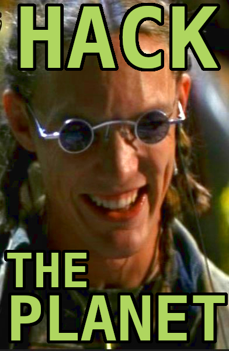

HACK THE PLANET!
Ich höre gerne und viel Podcasts. Von Akte X über Laberpodcasts hin zum Nerdkram ist alles dabei.Unter anderem bin ich vor einiger Zeit auf den "Hack the Planet" Podcast von Andreas Heil und Daniel Kirstenpfad
gestolpert und hatte das Glück seit der ersten Folge fleißiger Hörer zu sein.
Da es irgendwann zu Schnittpunkten mit den eigenen Interessen kommt, hab ich es mir nicht nehmen lassen ab und zu meine
Klappe auf zu reißen.
Eine dieser Schnittpunkte waren und sind mechanische Tastaturen.
So kam es dann auch, dass man sich doch über das ein oder andere Thema in dem Bereich austauschte.
Ich schein den beiden nicht auf die Nerven gegangen zu sein, sonst hätten sie mich wohl nicht gefragt, ob ich
denn nicht mal zu Gast sein will im Podcast.
Gesagt - getan. Mit ordentlich Lampenfieber und dem ein oder anderen Versprecher haben wir uns am Freitag Nachmittag
zusammen gesetzt - online versteht sich - und 3 Stunden über Keyboards, VIM, Githubs Arctic Code Vault, selbstgebaute Bartop Arcade
Maschinen und jahreszeit bedingte Monitorbugs unterhalten.
Hier das Ergebnis:
Es hat viel Spaß gemacht trotz anfänglichem Lampenfieber und Aufregung und es ist ein kleines Träumchen in Erfüllung gegangen beim
Hack the Planet Podcast zu Gast gewesen sein zu dürfen.
Vielen vielen Dank!
Wer mehr Infos zu den Zwei und zum Podcast haben will:
Podcast: podcast.hack-the-planet.tv
Andreas Heil: @aheil(Twitter) // Hack the Planet(Blog)
Daniel Kirstenpfad: @Bietiekay(Twitter) // Schrankmonster(Blog)
Bleibt abschließend nur zu sagen, abonniert den Podcast und

//EOF